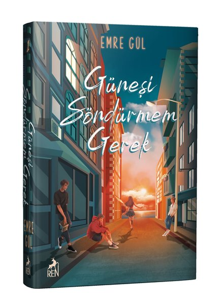

Işığa ihtiyaç duyduğun her gün için bir yıldız karala gökyüzüne.
Umut’un hayatında her şey yolunda giderken, yaşadığı bir kaza sonrasında her şey değişir. İç dünyasında kendiyle hesaplaşmaya çalışırken hiç beklemediği bir gerçekle karşı karşıya kalır.
Artık önünde iki seçenek vardır:
Ya bu gerçeği kabul edip hayatına kaldığı yerden devam edecek ya da bu gerçeğin acısına kendini mahkûm edecektir.
Umut her şeyin düzeldiğini düşündüğünde ise yakınlarıyla ilgili öğrendiği acı gerçekle yeni bir yol ayrımına girer. Yalanlar ve kabul edilmesi güç gerçeklerin hüküm sürdüğü bir hayatta, yaşadığı olayların enkazından kurtulmaya çalışırken aklı ve kalbi arasında verdiği savaşı kazanabilecek miydi?
Ve o, eğer istersem güneşi bile söndürebilecek kadar güçlü olduğumu öğretti bana.